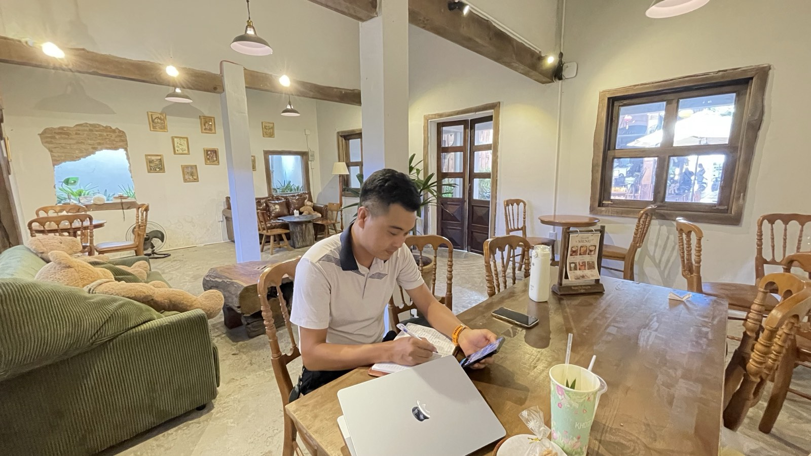

Ba người thầy, cùng một câu: đừng giảm giá
Tháng 8, tôi tự viết cho mình một câu: không được giảm giá. Tôi không ngờ sau đó mình sẽ nghe lại đúng câu ấy, bằng hai cách nói khác nhau, từ hai người thầy không quen biết nhau.

Ba lần nghe cùng một điều, từ ba người không hẹn nhau — đó là lúc một ý nghĩ trở thành nguyên tắc.
Tiếng nói thứ nhất — của chính tôi
Ngày 16/8, sau một giai đoạn nhìn lại cách mình đang làm, tôi tự chốt một nguyên tắc cho bản thân: "Không được giảm giá. Muốn tăng doanh thu thì tăng giá bán, và nếu tăng giá thì phải kèm tăng chất lượng dịch vụ." Lúc đó nó chỉ là một quyết định cá nhân, chưa có ai xác nhận nó đúng hay sai.
Tiếng nói thứ hai — thầy Lâm Đình Bảo
Ngày 19/9, trong một buổi học khác, thầy Lâm Đình Bảo nói một câu mà tôi chép lại ngay: "Cạnh tranh bằng giá là việc dễ nhất, mà càng dễ càng khó thành công." Đây là góc nhìn hơi khác tôi — không nói "đừng giảm giá" trực tiếp, mà nói về việc chọn con đường dễ nhất thường là con đường ít người thắng được, vì ai cũng làm được.
Tiếng nói thứ ba — chuyện ngọc trai đen
Ngày 26/9, thầy Lâm Minh Chánh — chủ nhiệm lớp — kể một câu chuyện kinh điển trong ngành marketing. Một thương gia khai thác được một mẻ ngọc trai màu đen, cực hiếm trên thị trường khi đó vốn chỉ toàn ngọc trai trắng. Ban đầu ông định bán ngang giá ngọc trai trắng, nghĩ vậy đã là lãi nhiều. Một chuyên gia tư vấn can ông lại: đừng bán rẻ một thứ hiếm như thế.
Cách làm được bày ra: trưng bày ngọc trai đen ở không gian sang trọng nhất, đặt cạnh kim cương và đá quý, chạy truyền thông hướng đến giới thượng lưu — và chưa vội bán, để người ta đến ngắm, bàn tán, thèm muốn. Khi mở bán, mức giá cao gấp nhiều lần ngọc trai trắng, và cháy hàng hoàn toàn.
"Mỗi khi công ty gặp khó khăn, đừng dại dột nghĩ đến việc cắt giá — hãy tạo thêm giá trị để tăng giá bán mà khách vẫn vui vẻ móc tiền."
Đây là lần nói rõ ràng và mạnh nhất trong ba tiếng nói: khó khăn không phải lý do để giảm giá — nó là lý do để tìm thêm giá trị.
Vì sao ba tiếng nói này quan trọng hơn một
Nếu chỉ có mình tôi tự nói với mình, đó vẫn chỉ là một ý kiến — có thể đúng, có thể là tôi đang tự biện minh cho việc không muốn hạ giá. Nhưng khi hai người thầy khác nhau, không bàn bạc với nhau, không biết tôi đã tự chốt điều này từ trước, cùng đi đến một kết luận gần giống — thì nó không còn là một ý kiến cá nhân nữa. Nó là một nguyên tắc đã được kiểm chứng độc lập ba lần.
Tôi tin vào cách kiểm tra này hơn là tin vào lý thuyết: nghe một thầy nói hay thì vẫn có thể là duyên gặp đúng người hợp gu. Ba người không hẹn mà gặp nhau ở cùng một điểm — xác suất đó là trùng hợp ngẫu nhiên đã thấp hơn nhiều.
Vì sao người giỏi mở đầu lại hay là người dễ giảm giá
Tôi nhận ra một điều về chính mình qua cả ba lần nghe: người mạnh ở việc mở tệp khách mới — như tôi — lại chính là người dễ sa vào giảm giá nhất. Khi đang cố chốt một khách mới, cảm giác "gần được rồi, bớt chút nữa là xong" rất dễ thắng lý trí. Cái giá phải trả không chỉ là một đồng doanh thu mất đi — nó còn làm khách đánh giá thấp giá trị thật của thứ mình đang bán.
Thay bằng giảm giá, câu hỏi tôi tự đặt cho mình bây giờ là: tôi có thể thêm điều gì vào cuộc tư vấn này để khách thấy giá trị nhiều hơn, thay vì bớt đi một phần giá? Áp dụng được cho cả hai việc tôi đang làm — tư vấn bất động sản lẫn vận hành quán. Không nêu giá bán, giá vốn hay doanh thu cụ thể ở đây, vì đây là nguyên tắc, không phải một lời chào hàng.
Câu chuyện ngọc trai đen là một ví dụ kinh điển trong ngành marketing, được kể lại trong buổi học ngày 26/9/2026 — không phải sự kiện xảy ra với doanh nghiệp của tác giả bài viết.
"Rồi, ngày mới tốt lành nhé."
Sống tử tế · Kiếm tiền hạnh phúc · Cho đi giá trị
Anh chị cũng đang vừa làm chủ, vừa bán hàng?
Tôi viết về hành trình vừa làm môi giới BĐS, vừa vận hành quán bia hơi tại Nha Trang — sai đâu kể đó. Nhắn tôi nếu anh chị muốn trao đổi về nghề.
Nhắn Zalo — 0869 668 638